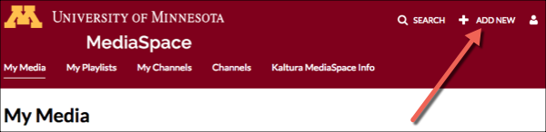

Recording new media
The Kaltura media space is able to record new content for My Media using user web cams.
- Log in to mediaspace.umn.edu
-
Click the + Add New button found on the top right corner of the page's banner

-
Select Record Webcam in Browser from the drop-down menu
to open the Record Media window
- The web browser and/or operating system may ask permission for canvas.umn.edu to use your camera and microphone. Click Allow to give Kaltura access to your webcam.
- Click the gear icon in the top right corner of the video display to change which/whether camera or microphone is recorded.
Note: It may take a moment for the camera to appear on screen -
Select the red circle button to start recording
Important: Scroll to the bottom of the screen if the red button is not visible
- Select the white squar ebutton to stop recording
- Select the white play button to review your recording. If you are unsatisfied, click the Record Again button to re-record.
- Click Use this to upload the recording to Kaltura
- Enter a name for the recording near the bottom of the window
- Scroll down, select Save and wait until the window reloads with the message Your changes have been saved
- Select Go to Media Page and then Go to My Media to return to your MediaSpace dashboard.